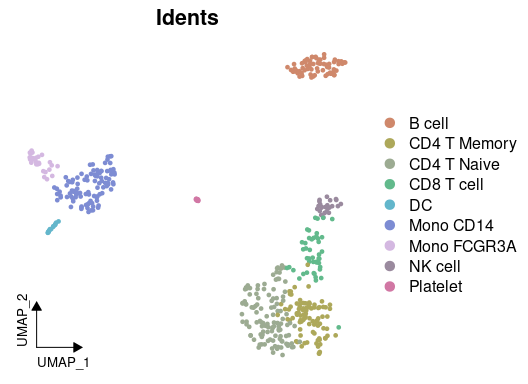
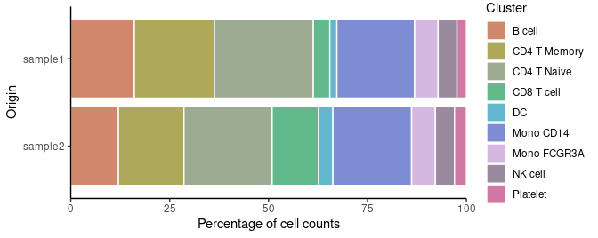
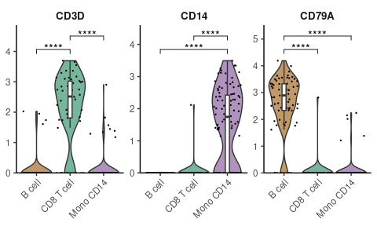
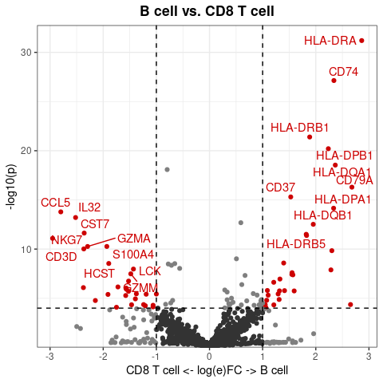
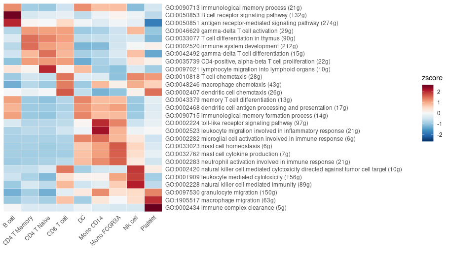
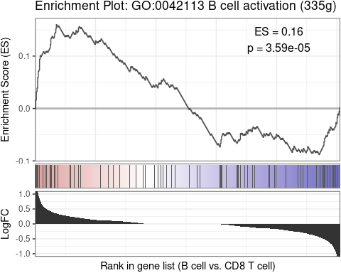
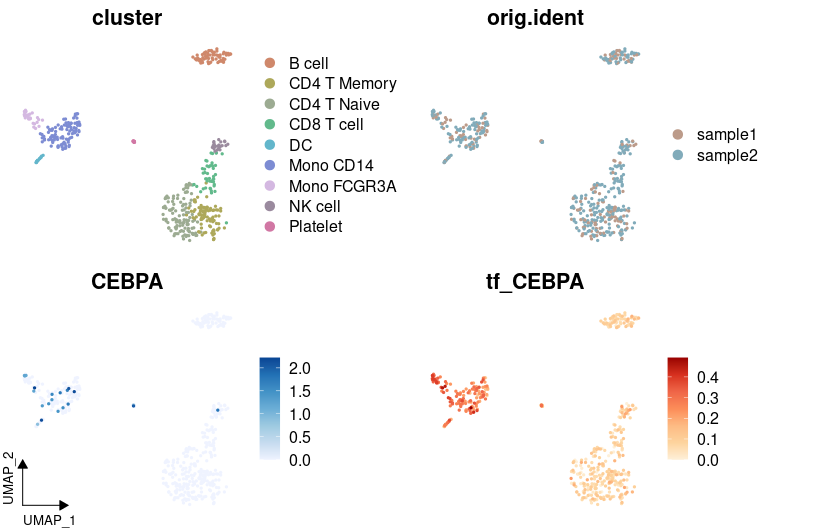
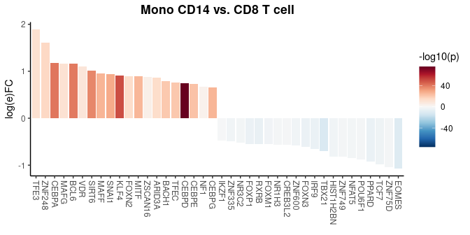
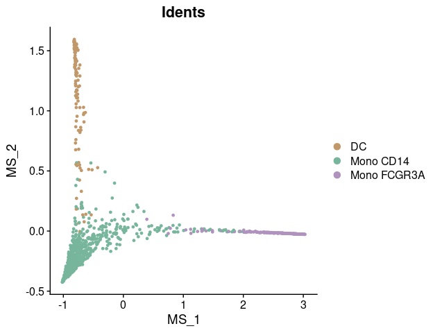

Overview
SeuratExtend is an R package designed to provide an improved and easy-to-use toolkit for scRNA-seq analysis and visualization, built upon the Seurat object. While Seurat is a widely-used tool in the R community that offers a foundational framework for scRNA-seq analysis, it has limitations when it comes to more advanced analysis and customized visualization. SeuratExtend expands upon Seurat by offering an array of enhanced visualization tools, an integrated functional and pathway analysis pipeline, seamless integration with popular Python tools, and a suite of utility functions for data manipulation and presentation. Designed to be user-friendly even for beginners, the package retains a level of professionalism that ensures rigorous analysis.
Key Features:
- Enhanced Data Visualization: Includes heatmaps, violin plots, dimensional reduction (UMAP) plots, waterfall plots, dot plots, proportion bars, volcano plots, and GSEA plots.
- Integrated Functional and Pathway Analysis: Supports GO and Reactome databases, with the option to use custom databases.
- Python Tool Integration: Easily apply tools like scVelo, SCENIC, and Palantir within R using the Seurat object.
- Utility Functions: Assorted functions for calculations and color selections to streamline your scRNA-seq analysis.
Resources
- GitHub Repository: Access the source code and contribute to SeuratExtend on GitHub.
- Online Tutorial: For a comprehensive guide on using SeuratExtend, visit our tutorial website.
- SeuratExtend Chatbot: Try our AI-powered assistant (beta version, powered by ChatGPT) for help with scRNA-seq analysis: scRNA-seq Assistant.
Citation
If you use SeuratExtend in your research, please cite:
Hua, Y., Weng, L., Zhao, F., and Rambow, F. (2024). SeuratExtend: Streamlining Single-Cell RNA-Seq Analysis Through an Integrated and Intuitive Framework. bioRxiv, 2024.08.01.606144. https://doi.org/10.1101/2024.08.01.606144
Installation
Install SeuratExtend directly from GitHub:
if (!requireNamespace("remotes", quietly = TRUE)) {
install.packages("remotes")
}
remotes::install_github("huayc09/SeuratExtend")Vignettes and Tutorials
Enhanced Visualization
-
Create an Enhanced Dimensional Reduction Plot
DimPlot2FeaturePlot3FeaturePlot3.gridtheme_umap_arrows -
Generate a Heatmap Plot
Heatmap -
Create Enhanced Dot Plots (New in v1.1.0)
DotPlot2 -
Create an Enhanced Violin Plot
VlnPlot2 -
Visualize Cluster Distribution in Samples
ClusterDistrBar -
Generate a Waterfall Plot
WaterfallPlot -
Create Volcano Plots (New in v1.1.0)
VolcanoPlot -
Explore Color Functions
color_procolor_iwhryb2rgbsave_colors
Geneset Enrichment Analysis (GSEA)
-
Conduct GSEA using the GO or Reactome database
GeneSetAnalysisGOGeneSetAnalysisReactome -
Perform GSEA using customized genesets
GeneSetAnalysis -
Find pathways in the GO/Reactome database or customized genesets
SearchDatabaseSearchPathways -
Convert GO/Reactome pathway IDs to pathway names
RenameGORenameReactome -
Filter the GO/Reactome pathway list based on certain criteria
FilterGOTermsFilterReactomeTerms -
Create a GSEA plot emulating the Broad Institute analysis
GSEAplot
Trajectory and Pseudotime Analysis
-
scVelo Tutorial for Trajectory Analysis
scVelo.SeuratToAnndatascVelo.Plot -
Palantir Tutorial for Trajectory and Pseudotime Analysis
Palantir.RunDMPalantir.Pseudotime -
MAGIC for Denoising and Smoothing Gene Expression
Palantir.Magic -
CellRank Tutorial for Trajectory Analysis
Cellrank.ComputeCellrank.Plot -
Gene Expression Dynamics Along Differentiation Trajectories
GeneTrendCurve.PalantirGeneTrendHeatmap.PalantirGeneTrendCurve.SlingshotGeneTrendHeatmap.Slingshot -
Slingshot Tutorial for Pseudotime Analysis
RunSlingshot -
Integration of Seurat with Python Tools
create_condaenv_seuratextendSeu2AdataSeu2Loomadata.LoadLoomadata.AddDRadata.AddMetadataadata.Saveadata.Load
SCENIC for Gene Regulatory Networks Analysis
-
Importing SCENIC Loom Files into Seurat
ImportPyscenicLoom - Visualizing SCENIC Results
Utility Tools and Functions
-
Facilitate Gene Naming Conversions
HumanToMouseGenesymbolMouseToHumanGenesymbolEnsemblToGenesymbolGenesymbolToEnsemblUniprotToGenesymbol -
Compute Statistics Grouped by Clusters
CalcStats -
Assess Proportion of Positive Cells in Clusters
feature_percent -
Run Standard Seurat Pipeline
RunBasicSeurat
Single-Cell RNA-seq Analysis Course (New in v1.1.0)
Quick Start-Up Guide
This quick start-up guide provides an overview of the most frequently used functions in single-cell RNA sequencing (scRNA-seq) analysis. After running the standard Seurat pipeline (refer to this Seurat pbmc3k tutorial), you should have a Seurat object ready for further analysis. Below, we illustrate the use of a subset of the pbmc dataset as an example to demonstrate various functionalities of the SeuratExtend package.
Visualizing Clusters
library(Seurat)
library(SeuratExtend)
# Visualizing cell clusters using DimPlot2
DimPlot2(pbmc, theme = theme_umap_arrows())
Analyzing Cluster Distribution
To check the percentage of each cluster within different samples:
# Cluster distribution bar plot
ClusterDistrBar(pbmc$orig.ident, pbmc$cluster)
Marker Gene Analysis with Heatmap
To examine the marker genes of each cluster and visualize them using a heatmap:
# Calculating z-scores for variable features
genes.zscore <- CalcStats(
pbmc,
features = VariableFeatures(pbmc),
group.by = "cluster",
order = "p",
n = 4)
# Displaying heatmap
Heatmap(genes.zscore, lab_fill = "zscore")
Enhanced Dot Plots (New in v1.1.0)
# Create grouped features
grouped_features <- list(
"B_cell_markers" = c("MS4A1", "CD79A"),
"T_cell_markers" = c("CD3D", "CD8A", "IL7R"),
"Myeloid_markers" = c("CD14", "FCGR3A", "S100A8")
)
DotPlot2(pbmc, features = grouped_features)
Enhanced Visualization of Marker Genes
For visualizing specific markers via a violin plot that incorporates box plots, median lines, and performs statistical testing:
# Specifying genes and cells of interest
genes <- c("CD3D", "CD14", "CD79A")
cells <- WhichCells(pbmc, idents = c("B cell", "CD8 T cell", "Mono CD14"))
# Violin plot with statistical analysis
VlnPlot2(
pbmc,
features = genes,
group.by = "cluster",
cells = cells,
stat.method = "wilcox.test")
Visualizing Multiple Markers on UMAP
Displaying three markers on a single UMAP, using RYB coloring for each marker:
FeaturePlot3(pbmc, feature.1 = "CD3D", feature.2 = "CD14", feature.3 = "CD79A", pt.size = 1)
Create Volcano Plots (New in v1.1.0)
Create a basic volcano plot comparing two cell types:
VolcanoPlot(pbmc,
ident.1 = "B cell",
ident.2 = "CD8 T cell")
Conducting Geneset Enrichment Analysis (GSEA)
Examining all the pathways of the immune process in the Gene Ontology (GO) database, and visualizing by a heatmap that displays the top pathways of each cluster across multiple cell types:
options(spe = "human")
pbmc <- GeneSetAnalysisGO(pbmc, parent = "immune_system_process", n.min = 5)
matr <- RenameGO(pbmc@misc$AUCell$GO$immune_system_process)
go_zscore <- CalcStats(
matr,
f = pbmc$cluster,
order = "p",
n = 3)
Heatmap(go_zscore, lab_fill = "zscore")
Detailed Comparison of Two Cell Types
Using a GSEA plot to focus on a specific pathway for deeper comparative analysis:
GSEAplot(
pbmc,
ident.1 = "B cell",
ident.2 = "CD8 T cell",
title = "GO:0042113 B cell activation (335g)",
geneset = GO_Data$human$GO2Gene[["GO:0042113"]])
Importing and Visualizing SCENIC Analysis
After conducting Gene Regulatory Networks Analysis using pySCENIC, import the output and visualize various aspects within Seurat:
# Downloading a pre-computed SCENIC loom file
scenic_loom_path <- file.path(tempdir(), "pyscenic_integrated-output.loom")
download.file("https://zenodo.org/records/10944066/files/pbmc3k_small_pyscenic_integrated-output.loom", scenic_loom_path, mode = "wb")
# Importing SCENIC Loom Files into Seurat
pbmc <- ImportPyscenicLoom(scenic_loom_path, seu = pbmc)
# Visualizing variables such as cluster, gene expression, and SCENIC regulon activity with customized colors
DimPlot2(
pbmc,
features = c("cluster", "orig.ident", "CEBPA", "tf_CEBPA"),
cols = list("tf_CEBPA" = "D"),
theme = NoAxes()
) + theme_umap_arrows()
# Creating a waterfall plot to compare regulon activity between cell types
DefaultAssay(pbmc) <- "TF"
WaterfallPlot(
pbmc,
features = rownames(pbmc),
ident.1 = "Mono CD14",
ident.2 = "CD8 T cell",
exp.transform = FALSE,
top.n = 20)
Trajectory Analysis with Palantir in R
Trajectory analysis helps identify developmental pathways and transitions between different cell states. In this section, we demonstrate how to perform trajectory analysis using the Palantir algorithm on a subset of myeloid cells, integrating everything within the R environment.
Download and Prepare the Data
First, we download a small subset of myeloid cells to illustrate the analysis:
Diffusion Map Calculation
Palantir uses diffusion maps for dimensionality reduction to infer trajectories. Here’s how to compute and visualize them:
# Compute diffusion map
mye_small <- Palantir.RunDM(mye_small)
# Visualize the first two diffusion map dimensions
DimPlot2(mye_small, reduction = "ms")
Pseudotime Calculation
Pseudotime ordering assigns each cell a time point in a trajectory, indicating its progression along a developmental path:
# Calculate pseudotime with a specified start cell
mye_small <- Palantir.Pseudotime(mye_small, start_cell = "sample1_GAGAGGTAGCAGTACG-1")
# Store pseudotime results in meta.data for easy plotting
ps <- mye_small@misc$Palantir$Pseudotime
colnames(ps)[3:4] <- c("fate1", "fate2")
mye_small@meta.data[,colnames(ps)] <- ps
# Visualize pseudotime and cell fates
DimPlot2(
mye_small,
features = colnames(ps),
reduction = "ms",
cols = list(Entropy = "D"),
theme = NoAxes())
Visualization Along Trajectories
Visualizing gene expression or regulon activity along calculated trajectories can provide insights into dynamic changes:
# Create smoothed gene expression curves along trajectory
GeneTrendCurve.Palantir(
mye_small,
pseudotime.data = ps,
features = c("CD14", "FCGR3A")
)
# Create a gene trend heatmap for different fates
GeneTrendHeatmap.Palantir(
mye_small,
features = VariableFeatures(mye_small)[1:10],
pseudotime.data = ps,
lineage = "fate1"
)
scVelo Analysis
scVelo is a Python tool used for RNA velocity analysis. We demonstrate how to integrate and analyze velocyto-generated data within the Seurat workflow using scVelo.
Preparing for scVelo
First, download the pre-calculated velocyto loom file:
# Download velocyto loom file
loom_path <- file.path(tempdir(), "pbmc10k_mye_small.loom")
download.file("https://zenodo.org/records/10944066/files/pbmc10k_mye_small.loom",
loom_path,
mode = "wb") # Use binary mode for Windows compatibility
# Set up the path for saving the AnnData object in the HDF5 (h5ad) format
if (.Platform$OS.type == "windows") {
adata_path <- normalizePath(file.path(tempdir(), "mye_small.h5ad"), winslash = "/")
} else {
adata_path <- file.path(tempdir(), "mye_small.h5ad")
}
# Integrate Seurat Object and velocyto loom into an AnnData object
scVelo.SeuratToAnndata(
mye_small,
filename = adata_path,
velocyto.loompath = loom_path,
prefix = "sample1_",
postfix = "-1"
)Plotting scVelo Results
Once the data is processed, visualize the RNA velocity:
# Plot RNA velocity
scVelo.Plot(color = "cluster", basis = "ms_cell_embeddings",
save = "quick_start_scvelo.png", figsize = c(5,4))
For detailed usage of the functions and more advanced analysis, please refer to the vignettes and tutorials.
Single-Cell RNA-seq Analysis Course (New in v1.1.0)
A comprehensive 6-lesson course originally presented at the Institute for AI in Medicine (IKIM), University Hospital Essen on October 8, 2024, organized by the Department of Applied Computational Cancer Research. The course materials have been updated for SeuratExtend v1.1.0 and are now freely available online. Starting with fundamentals of R and Seurat, the course progressively builds to cover enhanced visualization, functional analysis, quality control, and cutting-edge methods including trajectory analysis, regulatory networks, and cell-cell communication. Perfect for beginners while providing depth needed for advanced applications.
Lesson 1: Introduction to R Programming
Essential R programming fundamentals tailored for scRNA-seq analysis. Covers basic data types, data structures (vectors, matrices, data frames), file operations, and package management. Perfect for beginners starting their journey in bioinformatics.
Lesson 2: Basic Single-Cell Analysis with Seurat
Comprehensive walkthrough of the standard Seurat workflow, from raw count matrix to cell type annotation. Learn about data normalization, dimensionality reduction, clustering, and visualization through hands-on analysis of PBMC data.
Lesson 3: Advanced Visualization with SeuratExtend
Master advanced visualization techniques using SeuratExtend’s enhanced plotting functions. Explore DimPlot2, FeaturePlot3, Heatmap, and other tools to create publication-ready figures. Includes practical examples of customizing plots and color schemes.
Lesson 4: Gene Set Enrichment Analysis and Utilities
Master functional enrichment analysis using GO and Reactome databases through SeuratExtend’s integrated GSEA pipeline. Learn to perform custom gene set analysis, interpret enrichment scores, and utilize helpful utility functions for gene naming conversions and cell proportions.
Lesson 5: Core Workflow Enhancements
Elevate your scRNA-seq analysis with advanced quality control, doublet removal, data integration using Harmony, cell cycle analysis, and alternative normalization methods like SCTransform. Understand key considerations for processing and analyzing multi-sample datasets.
Lesson 6: Advanced Analytical Methods (Part 1) (Part 2)
Explore cutting-edge techniques including trajectory analysis with scVelo/Palantir, cell-cell communication using CellChat/NicheNet, regulatory network inference with SCENIC, and specialized analyses for TCR/BCR data and copy number variations.
Publications Using SeuratExtend
- Hua, Y., Vella, G., Rambow, F., et al. (2022). Cancer immunotherapies transition endothelial cells into HEVs that generate TCF1+ T lymphocyte niches through a feed-forward loop. Cancer Cell 40, 1600-1618. https://doi.org/10.1016/j.ccell.2022.11.002
- Hua, Y., Wu, N., Miao, J., Shen, M. (2023). Single-cell transcriptomic analysis in two patients with rare systemic autoinflammatory diseases treated with anti-TNF therapy. Front. Immunol. 14. https://doi.org/10.3389/fimmu.2023.1091336
- Verhoeven, J., Jacobs, K.A., Rizzollo, F., Lodi, F., Hua, Y., Poźniak, J., Narayanan Srinivasan, A., Houbaert, D., Shankar, G., More, S., et al. (2023). Tumor endothelial cell autophagy is a key vascular-immune checkpoint in melanoma. EMBO Mol. Med. 15, e18028. https://doi.org/10.15252/emmm.202318028
- Dobersalske, C., Rauschenbach, L., Hua, Y., Berliner, C., Steinbach, A., Grüneboom, A., Kokkaliaris, K.D., Heiland, D.H., Berger, P., Langer, S., et al. (2024). Cranioencephalic functional lymphoid units in glioblastoma. Nat. Med. https://doi.org/10.1038/s41591-024-03152-x